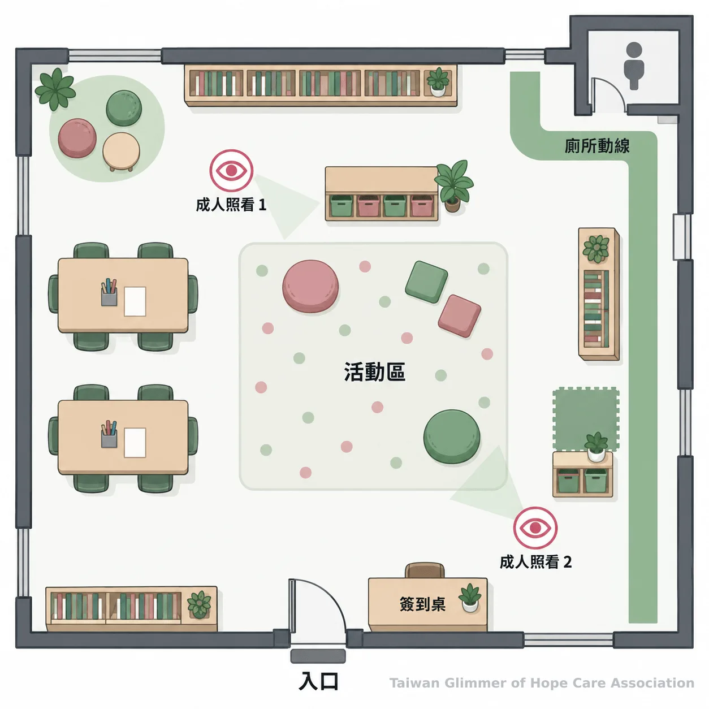
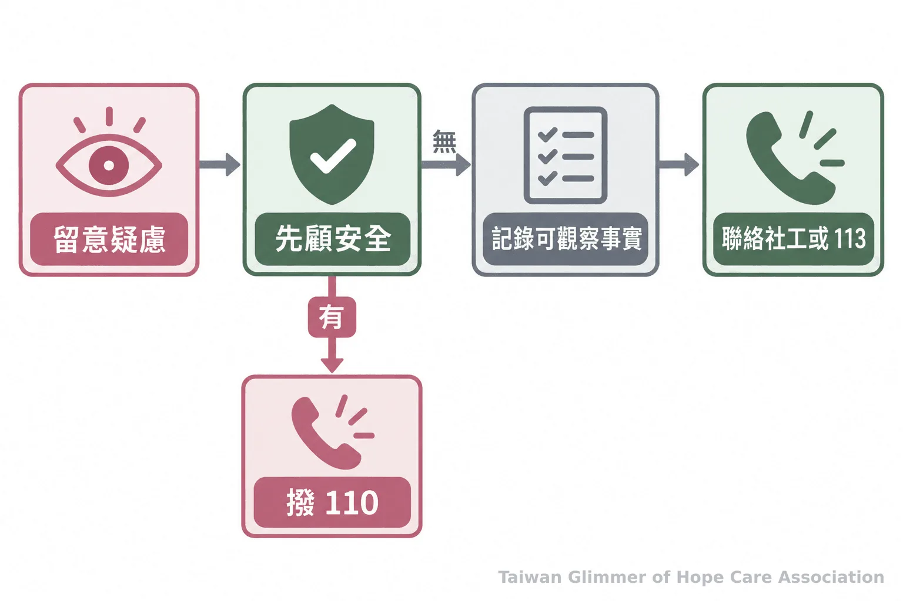

教會陪伴如何成為兒少據點？安全開班與社區合作指南
社區關懷與教會陪伴可從一個兒少課後班起步，逐步備妥安全場地、固定帶領者、志工界線及通報轉介流程，支持脆弱家庭與孩子。
孩子放學後需要穩定陪伴時，教會和社區可從固定課後班開始，安排帶領人力與安全流程，再連結社工及地方資源。
一、從熟悉的場域開始，讓陪伴有固定節奏
**先確認服務對象、時段和主要帶領者，再從一班開始。**小型兒少據點可在既有教會或社區空間起步，逐步建立與家庭、協會及社工的合作。
台灣微光希望關懷協會以「在地小衛星」連結社區，與板橋明穗教會、中壢宣愛社區關懷協會及瑞芳愛鄰合作。協會表示，板橋明穗教會的課後場域已陪伴脆弱家庭孩子七年，並以每月藝術課培養師資。這是協會經驗，各地仍須按孩子需求、場地與人力調整。
「我就結合散居在各地的小小教會團體，然後一個班、兩個班，一個班、一個班地複製下去。」
台灣微光希望關懷協會理事長林秀霞於 2026 年 8 月 1 日談據點合作時如此表示。先從一班開始，確認活動能否持續、孩子是否知道求助對象，再規劃合作。
二、開班前先看場地動線與成人分工
**確認出入口、活動區、接送方式及緊急聯絡人，並讓固定帶領者知道各自責任。**清楚的動線和成人分工，能讓孩子知道去哪裡活動、需要協助時找誰。
場地檢視時，走查報到、廁所、接送與疏散動線，收好清潔用品和工具。活動區保持可見；談話位置兼顧視線與隱私。報名前說明活動時間、接送及緊急聯絡方式。
安排固定帶領者，指派代班、點名、家長聯繫與緊急支援人員。志工須知道服務範圍、保密原則、互動界線及回報方式。可採兩位成人共同負責活動或接送，避免成人與兒少單獨處於隱蔽空間；這是安全做法，並非一律適用的法定要求。人手不足時先縮小班級。

三、遇到保護疑慮，依通報流程連結專業人員
**先留意孩子當下安全，依規定通報或聯絡 113，並把調查與風險評估交給社工及主管機關。**志工和一般民眾不自行查案，也不以單一跡象判定孩子是否受虐。
開班前寫好通報與轉介流程，列明聯絡人、合作社工及紀錄保管方式。孩子若主動說出令人擔心的事，安靜聆聽即可，不追問、不要求重述，也不承諾保密。紀錄直接觀察到的時間、地點和狀況，不加入推測，再交由專業人員處理。
衛福部指出，113 保護專線全年無休，提供兒少保護諮詢、通報與轉介；立即人身危險請先撥 110。法定責任工作者須依規定通報，據點可先向主管機關或合作社工確認分工。藝術活動提供表達與陪伴，畫作不能用來診斷或判定受虐；需要協助時應轉介專業人員。

四、作品與照片的使用先取得同意
**拍攝或公開作品前，先說明用途、發布平台與保存方式，並尊重孩子及監護人的意願。**活動參與不應以同意拍攝或公開作品作為條件。
將內部紀錄、成果分享和公開宣傳分開徵詢同意，說明發布平台、保存時間及撤回方式。公開前檢查畫作與背景有無姓名、校徽或地址，避免連結孩子的家庭處境或求助經歷。依法應保護身分的兒少，須遵守《兒童及少年福利與權益保障法》第 69 條；服務紀錄也應限制存取並設定刪除方式。
五、先把一個班照顧好，再培養長期師資
**先維持可持續的活動時段，檢視人力、安全與轉介合作，再按需要擴展。**穩定陪伴依靠清楚安排，不以開班數量衡量。
每月一次藝術課可作為培養師資的節點，日常陪伴頻率依人力和需求安排。活動後檢視出席、接送、場地視線及志工困難；若孩子需要其他協助，及早和家庭、社工或地方社政單位討論轉介。
- 確認服務年齡、固定帶領者與活動時段。
- 走查場地、接送動線及緊急聯絡方式。
- 和社工或地方社政窗口確認通報流程。
- 訂好志工分工、影像同意與資料保存規則。
想了解台灣微光希望關懷協會的服務據點與合作方式，可看據點介紹，或從聯絡頁洽詢。
- 從一個固定班級開始，先確認人力、動線、接送與安全流程。
- 志工不自行調查或判定受虐；疑似不當對待可撥 113，立即危險撥 110。
- 作品與影像先取得適當同意，公開前移除可辨識資訊。
常見問題
**從服務對象、時段、帶領者和安全流程開始盤點。**有初步安排後，再與協會或地方社政資源討論合作。
Q1：成立兒少據點需要先規劃大型計畫嗎？
不必。先確認一班的服務對象、時段、帶領者與安全安排，再按需要調整。
Q2：志工發現疑似受虐時，需要先問清楚經過嗎？
不用自行追問。先留意孩子安全、記錄觀察到的狀況，再聯絡 113、合作社工或地方社政單位。
Q3：兩位成人原則是法定要求嗎？
這是場域安全做法，並非所有據點一律適用的法定要求；團隊應確認相關法規與機構規範。
Q4：孩子不願意入鏡，可以只拍作品嗎？
可以。先尊重孩子與監護人的意願，並檢查作品是否含姓名、校名等線索。
Q5：可以用孩子的畫作判斷是否受虐嗎？
不可以。畫作不能判定受虐；有疑慮時依流程通報，由社工及主管機關評估。
參考文獻
通報及兒少隱私資訊依衛生福利部公開資料整理。
- 衛生福利部保護服務司（2026）。兒少保護。衛生福利部。https://www.mohw.gov.tw/cp-190-233-1.html
- 衛生福利部保護服務司（2024）。113 保護專線介紹。衛生福利部。https://dep.mohw.gov.tw/DOPs/cp-1183-6499-105.html
- 衛生福利部（2021）。兒童及少年福利與權益保障法（民國 110 年修正）。衛生福利部。https://www.mohw.gov.tw/dl-95290-d476e7a7-a1df-43e3-ad21-290d7b9378ce.html
本文同步刊於 appi.news。